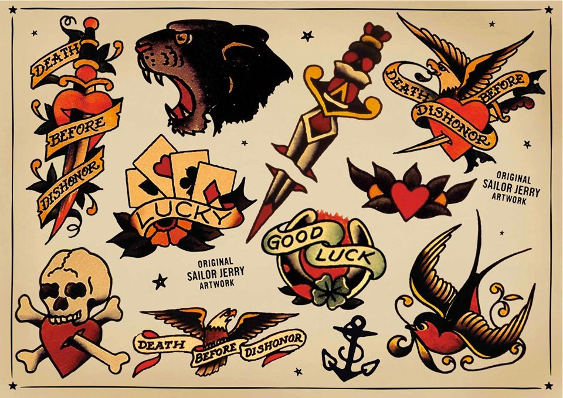

How many tattoo styles exist so far?
Actually, it's a wide answer, because all the time there are new styles comming up that didn't exist before, but here is a list with some styles so you can choose which one like the most!
| Style | Technique | Colors used | Example |
|---|---|---|---|
| Old School | Lines,Shading and Colors | Black,Red,Green,Yellow | |
| New School | Lines,shading and colors | Vibrant colors(yellow,green,pink,white) | |
| Dotwork | Black lines and dots | 3d effect made by dot proximity with black ink | |
| Blackwork | Black line,shading and color | Black | |
| Realism | Lines,shading and color | All |
